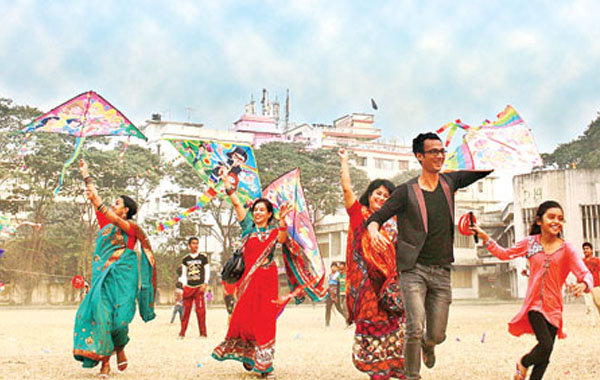

Shakrain: A festival of Kites and Fireworks
According to the solar calendar, on the last day of the Bengali month – 'Poush', the sun moves towards its southward (Dakshinayana) journey at the Tropic of Capricorn and starts moving towards the Tropic of Cancer. The day is known as 'Poush Sangkranti', also 'Makar Sangkranti' all over the world. The day is celebrated by the Hindu community in India, Nepal and Bangladesh in many cultural forms, with a variety of names like- 'Maghe sangkranti', (Nepal), 'Saakrat' (Delhi and Haryana), 'Uttarayan' (Gujarat), 'Maghi' (Punjab) and many more. In Bangladesh, the festival is well-known as 'Shakrain Festival'. Shakrain, on the whole, is a festival of colourful kites, fireworks, fire- breathing, paper balloons, food festival and many more. The festival has been celebrating in here since Mughal period. Perhaps, the history is more primitive. Last week, the Dhakaites celebrated the festival in Laxmibazar, Tantibazar, Shankhari bazar, Shutrapur, Dholaikhal, Lalbagh, Chwakbazar, Bongshal, Dhupkhola, Sadarghat and Jagannath University. Though it is a festival of the Hindus, in Bangladesh, it is more or less celebrated by the people of all religions.
The festival began in the morning with colourful kites from the rooftops in the older part of town. On the occasion of Shakrain, people have been buying kites 15 days ahead of the grand celebration. The price of each kite ranged between 5- 60 takas. “When we were young, we would make kites with paper, colour them and then fly them all day long," says 38-year-old Liton Datta, a businessman of Shankhari Bazar. "I can still remember Dukhu, a popular fellow in the area who would make kites for the people of Shankhari bazaar every year.” The kites have their distinct names for the shapes, sizes and designs, like- hearts, goggles, squares, eyes, angry birds and so on. Children, youngsters, middle aged people from different areas take part in the battle of 'Ghuddi' (in old town, kite is 'ghuddi') which is called 'Manja'.


Meanwhile, different kinds of rice cakes, deserts and confections are made for the occasion. The oldest member of the family fast on that day and say a prayer known as 'Buro-buri Pujo”. The kite fighting gets all the more serious in the afternoon. Even the oldest members of the family join the youth. Though primarily, Shakrain was regarded as a festival of kites and rice cakes, now-a-days, new dimensions have been added by the young ones. From every rooftop, colourful paper balloons, fire breathers and thousands of fireworks enchant the people of all ages. Also there are laser lightings, music, and dance parties arranged by the youth. “We have bought 25 paper balloons. Papa says that if I make wish while flying the balloons, my wish will come true!” says Adriza Nandi, a six-year-old girl, daughter of Abinash Nandi, a jewellery businessman of Laxmibazar. The festival is basically an event of joy, happiness and friendship. The scenes of Shakrain demonstrate the canvas of brotherhood and cheerfulness of old Dhaka dwellers.
